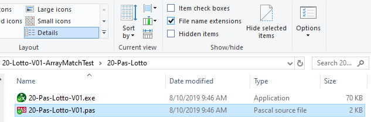

![Machine generated alternative text:
PX Pascal XE
Common tasks
20 -Pas-Lotto-VOI pas X
program Lotto
input
output)
Document
Compile
Help
Default •
to OF
{used as a demo of pseudo, EBNF and Railroad}
; {a Library necessary for random numbers and other functions}
Uses crt
Const {for GLOBAL constants}
art-Size
6; {a GLobaL variable for the Length of ALL arrays}
Type {both the user array and the random array can have this format}
arrLotto = Array Cl.. art-size] Of
Var {declare variables here}
my _ numbers
arrLotto =
arrLotto = (6,
// Lotto_numbers :
lotto numbers
arrLotto;
Integer; {with Python,
counter
Boolean; {with Python,
Begin {main}
14 E
Integer;
{test # 's for matching}
this can 't be done Loops}
arrays have to be compared term by term! }
Clrscr; {clear the screen after previous operations}
Randomize; {if this Line is not included, the randoms WILL repeat the same way each run}
lotto_numbers ]
lotto_numbers C 2 ]
lotto_numbersC3]
lotto_numbers C 4]
lotto_numbers C 5 ]
lotto_numbersC6]
- Random(4ß)
- Random(4ß)
+1; {"Random" starts at e which we don 't want}
+1; {Python "append" is complex, so enter each element manuaLLy}
Writeln( 'The lotto numbers are: '
counter
art-match
I; {InitiaLises the
- True;
print counter to I}
While counter
art-Size Do
27 E
Begin {Pre-rest Loop now compiling string}
Writeln ( lotto_numbers counter] ) ,
If my _ numbers C counte
lotto_numbersccounter] Then art-match
False;
counter
counter
I; {Increment counter}
atch Then Writeln( 'You won ' )
If arrm
//ELse WriteLn('You didn't win ' J;
Else Writeln( 'You did not win');
Writeln( 'Your original numbers are:](images/build01pas/clip_image001.png)
If you don't have Pascal XE loaded, the setup is here: Pascal XE
As a test, download this folder and run the ".pas" file: https://schoolsnsw.sharepoint.com/sites/SDD/Notes_SDD/CodeSamples/06-Add3-V01/06-Pascal-XE-Add3Num_V01
In the IDE, compile with check the syntax, execute will create an
Folder view:

In the screen shot above, line 3 calls a library. When trying to copy the code in, start with a minimised version and get it working, then add and test, add and test:
![Machine generated alternative text:
input
output)
Program Lotto
{used as a demo of pseudo, EBNF and Railroad}
; {a Library necessary for random numbers and other functions}
Uses crt
Type {both the user array and the random array can have this format}
arrLotto = Array I Of Integer;
Var
lotto numbers
arrLotto;
Begin {main}
Clrscr; {clear the screen after previous operations}
Randomize; {if this Line is not included, the randoms WILL repeat the
lotto_numbersCI] : = {"Random" starts at e which we don'
Writeln( 'Test v);
Writeln ( lotto_numbers ] ) ;](images/build01pas/clip_image003.png)
If you wish to use the older "Free Pascal" you can follow these links for the load and the tricky association:
· Associating ".pas" files with Pascal
When using it, you will see many more files in the folder: